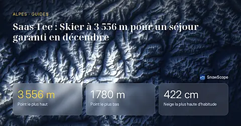

Ruka en décembre : une semaine de ski à 265 EUR, et laquelle choisir
L'argent d'abord, parce que c'est simple : la grille officielle 2026-27 de Ruka indique 58 EUR la journée adulte et 265 EUR les 6 jours. La neige demande plus d'attention. Un 15 décembre typique, nos 46 hivers d'historique donnent 36 cm, mais la première semaine de décembre seuls 39 % des hivers avaient 30 cm ou plus.
Consultez les prévisions neige en temps réel pour Ruka sur l'application SnowScopeHauteurs de neige, alertes poudreuse et carte 3D, gratuitement.
Une semaine avant Noël, chiffrée
Un forfait 6 jours adulte à 265 EUR est l'un des prix de semaine fixes les plus bas de cette série. La même grille fixe la journée à 58 EUR. Ruka et Pyhä partagent une grille, les chiffres sont donc les mêmes aux deux endroits. Logement, vols et repas s'ajoutent, et nous ne les chiffrons pas.
Avec un prix catalogue fixe, l'économie ne se fait pas sur le forfait mais sur les dates : choisissez une semaine avant les vacances de Noël, quand le logement est en général plus facile à trouver.


Quelle semaine de décembre
La part des hivers avec 30 cm ou plus monte vite au fil du mois : 39 % du 1er au 7 décembre, 61 % du 8 au 14, 72 % du 15 au 21 et 85 % la semaine de Noël. Le premier jour habituel avec 30 cm est le 5 décembre.
Début décembre, c'est donc au mieux pile ou face sur neige naturelle. À partir de la mi-décembre, les chances jouent pour vous, et la semaine de Noël est la plus sûre.
Ici, l'altitude compte à peine
Ruka est un fell, une colline basse et arrondie, avec des remontées entre 286 m et 494 m, 25 km de pistes cartographiées et 24 remontées. Notre historique donne une seule valeur pour tout le domaine : le haut n'est guère plus enneigé que le bas. Une année maigre (1 sur 10) a 20 cm le 15 décembre, une bonne 46 cm. Jamais profond, rarement nu : dans aucun de nos 46 hivers le sol n'était nu le 15 décembre.
La tendance est stable, voire un peu meilleure : la moyenne de décembre était de 37 cm sur les 15 premiers hivers et de 36 cm sur les 15 derniers, et la part des semaines de Noël avec 30 cm est passée de 80 % à 93 %.
Plan B : Pyhä-Luosto
Pyhä-Luosto, plus au nord-ouest, a presque le même décembre : 37 cm un 15 décembre typique et 72 % des hivers avec 30 cm la semaine du 15 au 21 décembre. Mêmes prix, 58 EUR la journée et 265 EUR les 6 jours, et son ouverture officielle est prévue le 27 novembre 2026.
Ruka pour plus de remontées et un village plus animé, Pyhä pour une semaine plus calme ; la neige et le forfait seront à peu près les mêmes.
Conseils aux skieurs
- Réservez à partir du 15 décembre : 72 % de nos hivers avaient 30 cm cette semaine-là, contre 39 % la première semaine.
- Comptez 265 EUR de forfait pour 6 jours et concentrez vos efforts sur un logement moins cher avant les vacances.
- Attendez-vous à des journées courtes et sombres : organisez le ski autour des quelques heures de lumière.
- Emportez un vrai équipement grand froid ; décembre en Laponie finlandaise peut être glacial.
Autres cartes (sites externes)
Références et crédits
- Ruka: official lift-pass prices (2026-27), checked 13 November 2026 www.ruka.fi/en/shop/skipasses
- Pyhä-Luosto: official lift-pass prices (2026-27), checked 13 November 2026 www.pyha.fi/en/en/skiresort-winter/lift-tickets
À propos de ces chiffres
Chiffres de neige : historique SnowScope, 46 hivers passés (1980-81 à 2025-26) aux altitudes de la station, corrigé de l'altitude (une estimation pour une zone, pas les bulletins de la station) ; « bonne neige » = 30 cm ou plus au sol en moyenne sur la semaine. Carte : notre hauteur habituelle au 15 décembre répartie sur le relief selon l'altitude. Pistes et remontées : cartographie OpenSkiMap. Forfaits : grilles officielles des stations, vérifiées le 13 novembre 2026 ; les prix peuvent changer.
Bulletins d'avalanche officiels: EAWS – European Avalanche Warning Services
Citer ce bulletin
Pour la recherche, l'enseignement ou la presse : chiffres et graphiques réutilisables librement sous CC BY 4.0 avec cette citation.
SnowScope (2026), Ruka en décembre : une semaine de ski à 265 EUR, et laquelle choisir, https://snowscope.app/blog/fr/2026/11/ruka-december-skiing-finland-early-season-price.html, consulté le 2026-11-14
SnowScope (Atlas Labs). (2026, November 14). Ruka en décembre : une semaine de ski à 265 EUR, et laquelle choisir. SnowScope snow reports. https://snowscope.app/blog/fr/2026/11/ruka-december-skiing-finland-early-season-price.html
BibTeX
@misc{snowscope2026rukadecemberskiingfinlan,
author = {{SnowScope (Atlas Labs)}},
title = {Ruka en décembre : une semaine de ski à 265 EUR, et laquelle choisir},
year = {2026},
month = nov,
howpublished = {\url{https://snowscope.app/blog/fr/2026/11/ruka-december-skiing-finland-early-season-price.html}},
note = {Published 2026-11-14 16:44 UTC; accessed 2026-11-14}
}· CC BY 4.0 · Méthodes, données et outils →
Ruka : neige et température selon l'altitude, cet hiver vs l'hiver dernier (outils) →
Suivre Ruka
Gratuit : un message quand la neige arrive, et la météo chaque matin.
Autres bulletins neige

Skiez sur 157 km de pistes balisées à Serre Chevalier, où le sommet de la montagne a 100 % de chances d'être enneigé d'ici la mi-décembre.

Les remontées de Saas-Fee atteignent 3 556 m, où notre historique montre que 100 % des hivers passés ont au moins 30 cm de neige à la mi-décembre.